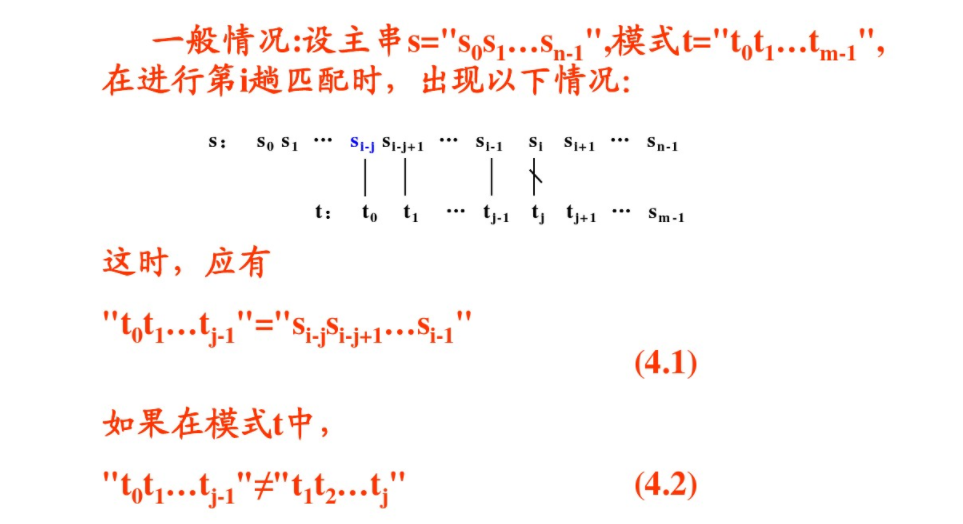
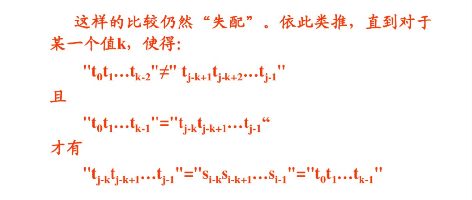
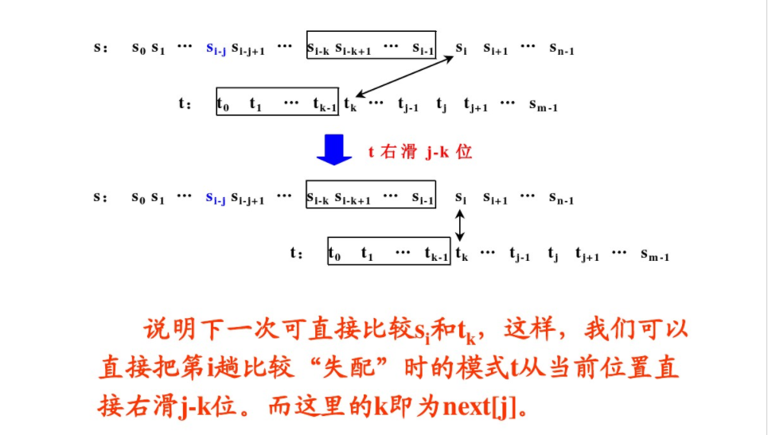
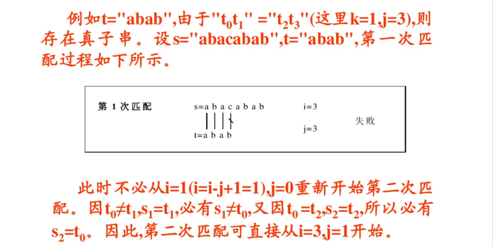
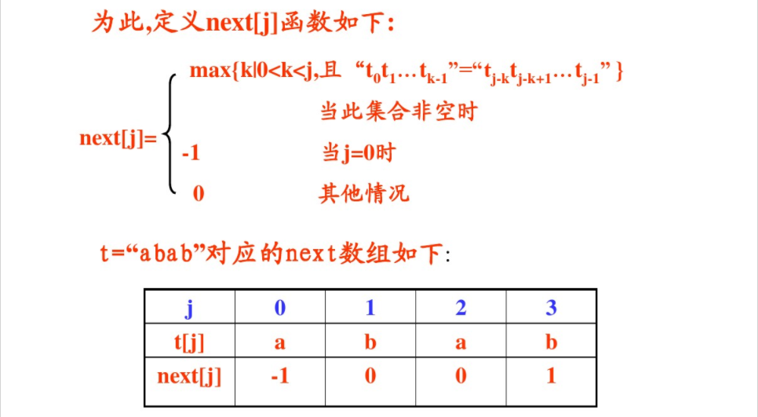
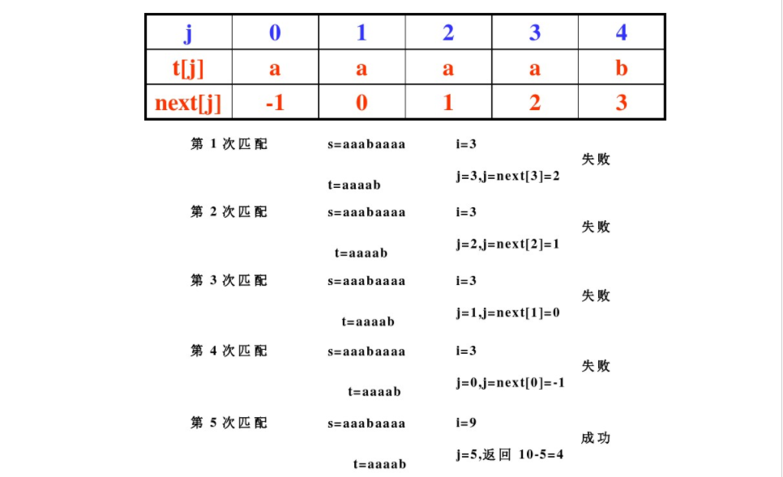
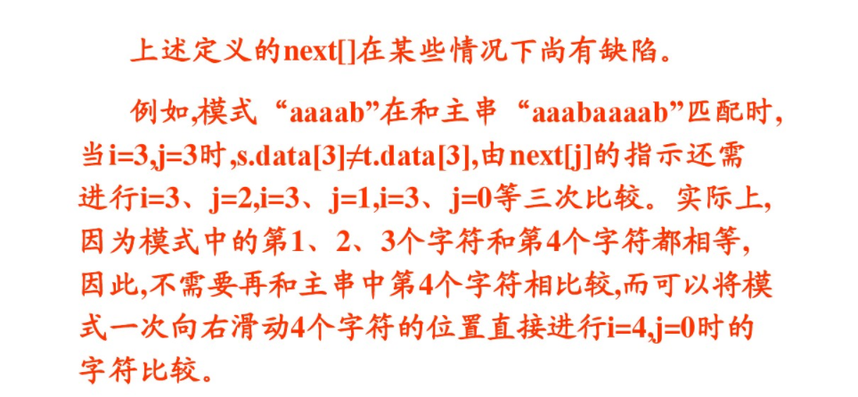
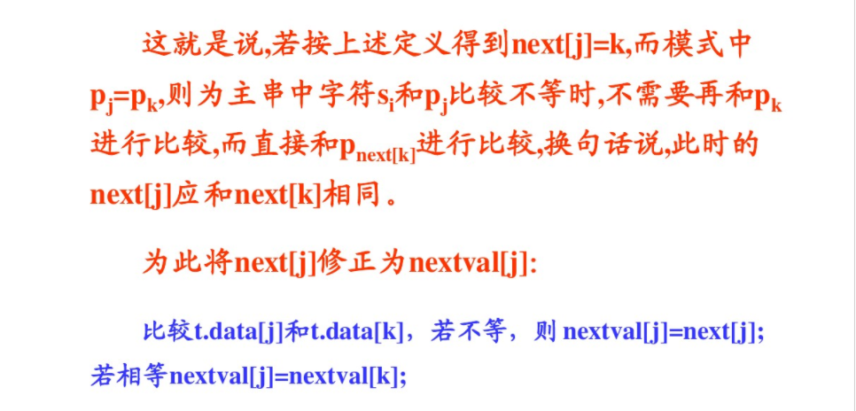
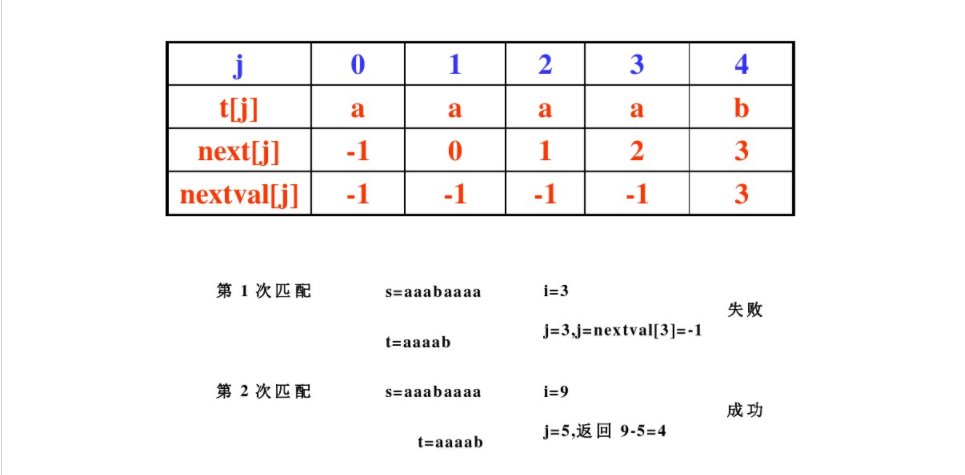

再谈KMP——KMP的证明及优化
再拿起算法来已是沧海桑田啊。看着之前的队友拿到了大厂offer，从ACM退组颓了两年可能是有点后悔的，只能怪自己当初被打趴下了没有坚持下去。吸取教训，要顽强。开始吧，算法。
串的模式匹配
定义： 子串的定位操作通常称为串的模式匹配，它是各种串处理系统中最重要的运算之一，子串也叫模式串，区别于主串。
朴素的模式匹配
- 也称布鲁特-福斯（BF）算法，基本思想：
从主串的第一个字符起与模式串的第一个字符比较，若相等，则逐一比较第二、第三个字符，若在比较过程中任一位置不相等，则将主串指针回溯至原位置+1，模式串指针回溯至0，重新比较，直到找到完全相等。 - 复杂度：在最好的情况下（aaaaaaa和aaa）m+n；最差的情况下（bbbbaaa和aaa）m*n；
改进的模式匹配
- 也称KMP算法，较BF算法有较大的改进，主要是消除了主串指针的回溯，从而使算法效率在一定程度上有很大的提高。
- 基本思想：在匹配失败后，根据模式串的 隐藏信息 和已经得到的 部分匹配结果 将模式串向右滑动尽可能远的距离，再进行比较。
- 时间复杂度：求next数组为O(m),在后面的匹配中因主串s的下标不减即不回溯，比较次数可记为n，所以KMP算法总的时间复杂度为O(n+m)。
- 真子串：真子串是指模式串t存在某个k(0<k<j)，使得”t0t1…tk“=”tj-ktj-k+1…tj“成立。例如 t=”abab”，即t0t1=t231
则”ab”是t的真子串。
真子串就是模式串中隐藏的信息，利用它和已经得到的部分匹配结果来提高模式匹配的效率。 - 下文摘自严蔚敏《数据结构》
- 
即：
假设我们已知如下条件：
1. 已得到的部分匹配结果：记模式串与主串匹配成功的部分为str1，长度为n，str1的n-1长前缀与主串的n-1长前缀匹配，后缀亦同。
2. 模式串的隐藏信息：str1的n-1长前缀与str1的n-1长后缀不相同
可得：str1的n-1长前缀与主串的n-1长后缀一定不同，所以主串回溯+1模式串右移一位是没有意义的，我们根据已知条件就可以推论。
继续类推比较n-2、n-3…,如果str1真子串为空，k值为0，则可以确定str1所有前缀与后缀无一相同，也就意味着所有前缀和主串中与str1相匹配的一段所有后缀都不同，也就没有必要比较了，直接将模式串滑过此次部分匹配的结果从主串的下一个字符开始从零比较。（结合图形容易理解）- 
- 
问题来了，上述两条条件，第一条是肯定的，第二条也即如何确定模式串的隐藏信息——真子串k值如何求呢？答案是next[]。 - 
- 
求next函数：1
2
3
4
5
6
7
8
9
10
11
12
13void getNext(string t,int * next) {
int j=0,k=-1,len=t.size();
next[0]=-1;
while(j<len-1) {
if(k==-1||t[j]==t[k]) {
j++;
k++;
next[j]=k;
}else {
k=next[k];
}
}
}
KMP函数：1
2
3
4
5
6
7
8
9
10
11
12
13
14
15
16
17
18int KMPindex(string t,string s) {
int next[MAXSIZE],i=0,j=0,v;
int lenS=s.size();
int lenT=t.size();
getNext(t,next);
while(i<lenS&&j<lenT) {
if(j==-1||s[i]==t[j]) {
j++;
i++;
}else {
j=next[j];
}
}
if(j>=lenT) v=i-lenT;
else v=-1;
return v;
}
优化的KMP
- 上文定义的next数组仍有一定缺陷



改进的next：1
2
3
4
5
6
7
8
9
10
11
12
13
14
15
16void getNextval(string t,int * nextval) {
int j=0,k=-1,len=t.size();
nextval[0]=-1;
while(j<len-1) {
if(k==-1||t[j]==t[k]) {
j++;
k++;
if(t[j]!=t[k])
nextval[j]=k;
else
nextval[j]=nextval[k];
}else {
k=nextval[k];
}
}
}
